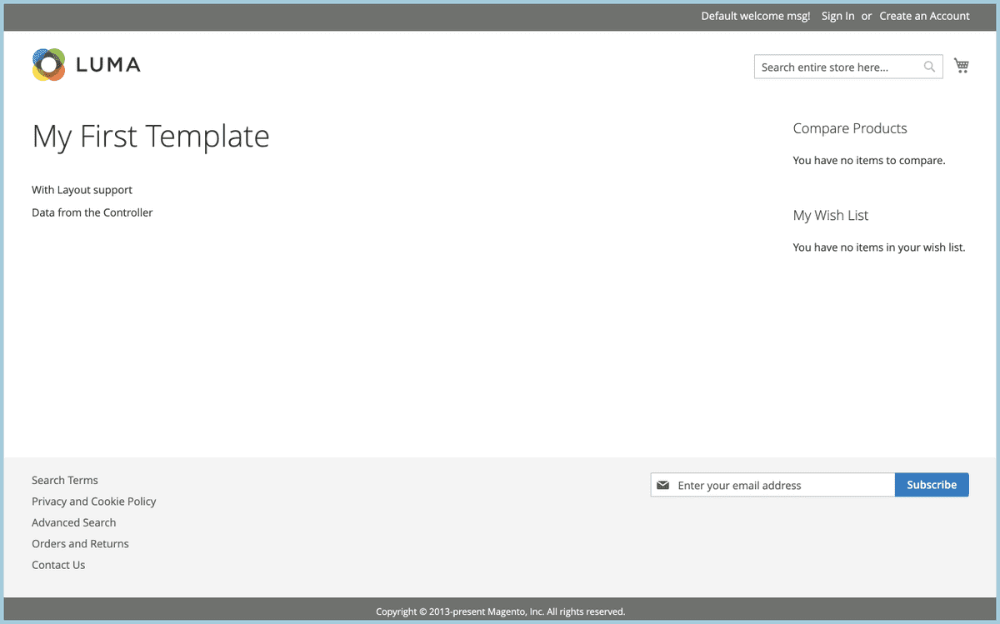

From the Template and Layout Rendering lesson, we've learned how to create a new template and render it on a custom page with the help of a layout. As you've noticed, the template provides HTML markup with the static text.
Из урока «Визуализация шаблонов и макетов» мы узнали, как создать новый шаблон и отобразить его на настраиваемой странице с помощью макета. Как вы заметили, шаблон предоставляет разметку HTML со статическим текстом.
<h1>My First Template</h1><p>With Layout support</p>
This might be enough for a static website, but not for Magento 2 website. In this lesson, we are going to learn how to pass data from the PHP side, specifically from an Action Controller to the template.
Этого может быть достаточно для статического веб-сайта, но не для веб-сайта Magento 2. В этом уроке мы узнаем, как передавать данные со стороны PHP, в частности, из Action Controller в шаблон.
By the end of this lesson, you will know one of the ways how dynamic content can be rendered on a page.
К концу этого урока вы узнаете один из способов отображения динамического контента на странице.
Lesson Overview
Обзор урока
In this lesson we are going to learn the following:
В этом уроке мы узнаем следующее:
How to pass data from a controller class to a template?
Как передать данные из класса контроллера в шаблон?
How to get access to a block class from a controller?
Как получить доступ к классу блока из контроллера?
How to assign data to a block class?
Как присвоить данные классу блока?
How to render dynamic data in a template?
Как отображать динамические данные в шаблоне?
Before we begin
Прежде чем мы начнем
You will need to download the source code from the previous lesson in order to follow the lesson.
Вам нужно будет загрузить исходный код из предыдущего урока, чтобы продолжить его.
Controller Logic
Логика контроллера
Let's have a closer look at the execute() method of the View Controller class.
Давайте подробнее рассмотрим метод execute() класса View Controller.
As you can see, the resultFactoryis used to create a new instance of a Magento\Framework\View\Result\Page class. The Page class includes logic, which is used to render all blocks and templates on the page. The created instance of the Page class includes the path to the example.phtml template from the MageMastery_FirstLayout module.
Как видите, resultFactory используется для создания нового экземпляра класса Magento\Framework\View\Result\Page. Класс Page включает логику, которая используется для отображения всех блоков и шаблонов на странице. Созданный экземпляр класса Page включает путь к шаблону example.phtml из модуля MageMaster_FirstLayout.
Once the execute() method returns a Page object, it will trigger the Page::render()method and content is rendered on a page.
Как только метод execute() возвращает объект Page, он запускает метод Page::render(), и содержимое отображается на странице.
However, if we want to pass content from a Controller class into the example.phtml template, the logic of the execute() method should be modified.
Однако, если мы хотим передать контент из класса Controller в example.phtml template, следует изменить логику метода execute().
First of all, let's assign a result of the create() method into the $page variable.
Прежде всего, присвоим результат метода create() переменной $page.
Now, we can access any Block class, that has been added in the page for further rendering. The Page class has a dependency on a Layout class that can be used to retrieve an instance of a block by calling the getBlock() method. The getBlock(string $name) method accepts the $name argument.
Теперь мы можем получить доступ к любому классу Block, который был добавлен на страницу для дальнейшего рендеринга. Класс Page имеет зависимость от класса Layout, который можно использовать для получения экземпляра блока путем вызова метода getBlock(). Метод getBlock (string $name) принимает аргумент $name.
In the previous lesson we've discussed that the name of the Block declaration added to the magemastery_firstlayout_page_view.xml layout file is magemastery.first.layout.example. We can retrieve an instance of a block by calling the getBlock()method and passing the block name.
В предыдущем уроке мы обсуждали, что имя объявления блока, добавленного в файл макета magemaster_firstlayout_page_view.xml, - magemaster.first.layout.example. Мы можем получить экземпляр блока, вызвав метод getBlock() и передав имя блока.
The Template class allows us to set additional data. For this, the setData() method has to be used. There are other methods available for setting data to a Template object, but for this lesson, we will only use the setData() method. The Template::setData(string $name, mixed $value = null) method accepts two arguments. First argument is the name of the key for which the value has to be set. Further more, the key has to be used to access the assigned value.
Класс Template позволяет нам устанавливать дополнительные данные. Для этого необходимо использовать метод setData(). Существуют и другие методы для установки данных в объект Template, но в этом уроке мы будем использовать только метод setData(). Метод Template::setData(string $name, mixed $value = null) принимает два аргумента. Первый аргумент - это имя ключа, для которого должно быть установлено значение. Более того, ключ должен использоваться для доступа к назначенному значению.
Let's assign a value to the key called custom_parameter.
Давайте присвоим значение ключу custom_parameter.
$block->setData('custom_parameter','Data from the Controller');
As a result, the block instance has new data assigned and it can be accessed via the getData() method.
В результате экземпляру блока назначены новые данные, и к ним можно получить доступ через метод getData ().
$data=$block->getData();print_r($data);/* Retult
Array (
[type] => Magento\Framework\View\Element\Template
[custom_parameter] => Data from the Controller
)
*/
Alternatively, we can pass the name of the key to the getData(string $key = null, int $index = null) method.
В качестве альтернативы мы можем передать имя ключа методу getData (string $ key = null, int $ index = null).
$customParameter=$block->getData('custom_parameter');echo$customParameter;// Result: Data from the Controller
The result of the modified execute() method:
Результат модифицированного метода execute():
publicfunctionexecute(){/** @var Page $page */$page=$this->resultFactory->create(ResultFactory::TYPE_PAGE);/** @var Template $block */$block=$page->getLayout()->getBlock('magemastery.first.layout.example');$block->setData('custom_parameter','Data from the Controller');return$page;}
The execute()method creates an instance of the Page class, returns an instance of a Template from the pool of declared blocks that has the magemastery.first.layout.exampleblock name. Then the custom value is assigned to the block. Lastly, the Page object is returned from the execute() method for rendering.
Метод execute() создает экземпляр класса Page, возвращает экземпляр Template из пула объявленных блоков с именем блока magemaster.first.layout.example. Затем блоку присваивается пользовательское значение. Наконец, объект Page возвращается из метода execute () для рендеринга.
The app/code/MageMastery/FirstLayout/Controller/Page/View.php file:
<?phpdeclare(strict_types=1);namespaceMageMastery\FirstLayout\Controller\Page;useMagento\Framework\App\Action\Action;useMagento\Framework\Controller\ResultFactory;useMagento\Framework\View\Element\Template;useMagento\Framework\View\Result\Page;classViewextendsAction{publicfunctionexecute(){/** @var Page $page */$page=$this->resultFactory->create(ResultFactory::TYPE_PAGE);/** @var Template $block */$block=$page->getLayout()->getBlock('magemastery.first.layout.example');$block->setData('custom_parameter','Data from the Controller');return$page;}}
Template Logic
Логика шаблона
Every PHTML template that is rendered by the Magento\Framework\View\Element\Template class has access to a $block variable inside the template. The $block variable is an instance of a current Template class or any subclass, that extends the Template class.
Каждый шаблон PHTML, отображаемый классом Magento\Framework\View\Element\Template, имеет доступ к переменной $block внутри шаблона. Переменная $block является экземпляром текущего класса Template или любого подкласса, который расширяет класс Template.
In order to get access to the custom_parameter inside the example.phtml template, we have to use the Template::getData() method.
Чтобы получить доступ к custom_parameter внутри шаблона example.phtml, мы должны использовать метод Template::getData().
<p><?=$block->getData('custom_parameter');?></p>
It is also practical to add a doc-block with the name of the class, so the IDE, in my case PHPStorm will highlight all public methods. The final example.phtml template:
Также практично добавить документ-блок с именем класса, поэтому IDE, в моем случае PHPStorm, будет выделять все общедоступные методы. Последний шаблон example.phtml:
<?phpuseMagento\Framework\View\Element\Template;/** @var Template $block */?><h1>My First Template</h1><p>With Layout support</p><p><?=$block->getData('custom_parameter');?></p>
As a result, the page should render the custom parameter.
В результате на странице должен отображаться специальный параметр.

Important to Know
Важно знать
Even if you can use PHP inside a PHTML template, there shouldn't be any business or calculation logic located in the template. All business logic should be located in a so-called Service Layer or a PHP class that represents such business logic. We are going to talk more about the Service Layer in the upcoming lessons. PHTML templates should be as simple and tiny as possible, and only include data and simple PHP logic inside such as loops and conditions.
Даже если вы можете использовать PHP внутри шаблона PHTML, в шаблоне не должно быть никакой бизнес-логики или логики вычислений. Вся бизнес-логика должна быть расположена на так называемом уровне обслуживания или классе PHP, который представляет такую бизнес-логику. Мы собираемся подробнее поговорить об уровне обслуживания в следующих уроках. Шаблоны PHTML должны быть как можно более простыми и миниатюрными и включать в себя только данные и простую логику PHP, такую как циклы и условия.
Other Methods for Passing Dynamic Data
Другие методы передачи динамических данных
This is not the only way to pass data from a PHP class to a PHTML template. This is only one of the ways that you should be aware of when building custom Magento 2 functionality. The preferred method of passing data to a PHTML template is a usage of a View Model class. The View Model class and its capabilities is the next lesson of the Magento 2 for Beginners course.
Это не единственный способ передать данные из класса PHP в шаблон PHTML. Это только один из способов, о которых вам следует знать при создании пользовательской функциональности Magento 2. Предпочтительный метод передачи данных в шаблон PHTML - это использование класса модели представления. Класс View Model и его возможности - это следующий урок курса Magento 2 для начинающих.